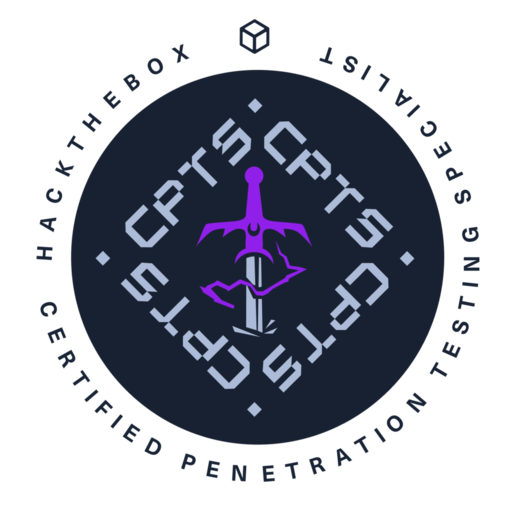

Hack The Box
Certified Penetration Testing Specialist
Certificação CPTS concluída, com foco em metodologia de pentest, enumeração, segurança web, Active Directory, pivoting e elaboração de relatórios técnicos.
Certificação concluída
Web SecurityActive DirectoryPenetration Testing